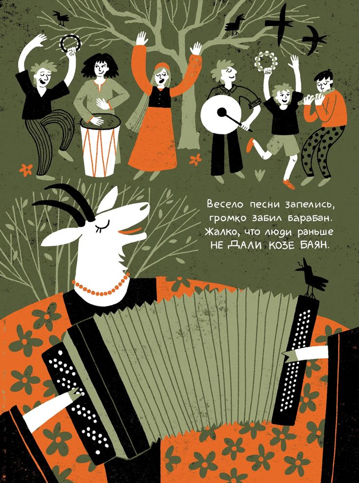

Добро пожаловать


После нажатия запускается аудио локации.


Но это только начало. Готовы ли вы отправиться в более глубокое путешествие? Ещё больше историй, смыслов и открытий. Я буду рядом в этом пути: поддержу и все объясню.
Поделитесь своими ощущениями от путешествия и инсайтами:
Сделай короткую паузу и зафиксируй инсайт: в заметки или голосом.